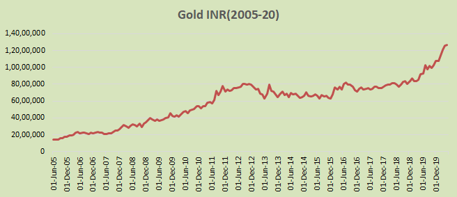

Quantify India in its effort to mathematically explain concepts has something on gold investing too. Below graph assumes a monthly investment of Rs 1000 from 1980 onwards (increased by 6% annually). The current SIP amount in 2018 would be Rs 9500 and total investment outlay Rs 17L (till June 2018).
The current market value (June 2018) of total gold holdings would be whopping Rs 80L. That’s an annual return of 9.38%. No extra charges or costs are considered.
Here’s the chart

| Periods | Returns(%) |
|---|---|
| 1980Sep-85 | 0.3 |
| 1986-90 | 8.7 |
| 1990-95 | 11.0 |
| 1996-00 | 1.2 |
| 2001-05 | 15.1 |
| 2006-10 | 22.7 |
| 2011-15 | -4.7 |
| 2016-2018Jun | 2.4 |